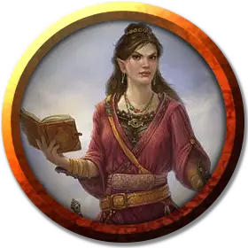

Варнир
Varnyr
Средний Гуманоид (Солнечный эльф), хаотично-добрый, именной НИП

Класс Доспеха 15 (кираса)
Хиты 9 (2к8)
Скорость 30 футов
| мод | спас | ||
|---|---|---|---|
| СИЛ | 11 | +0 | +0 |
| ЛОВ | 12 | +1 | +1 |
| ТЕЛ | 11 | +0 | +0 |
| мод | спас | ||
|---|---|---|---|
| ИНТ | 12 | +1 | +1 |
| МДР | 14 | +2 | +2 |
| ХАР | 16 | +3 | +3 |
Навыки Обман +5, Проницательность +4, Убеждение +5
Чувства тёмное зрение 60 футов, пассивное Восприятие 12
Языки Общий, Эльфийский
Опасность 1/8 (25 опыта)
Бонус мастерства +2
Особенности
Наследие фей. Варнир совершает с преимуществом спасброски от очарования, и её невозможно магически усыпить.
Черта характера. «У меня сердечное, спокойное поведение, даже когда обстоятельства заставляют нервничать.»
Идеал. «У всего есть свое место, и у каждого есть своя роль.»
Привязанность. «Крепость Свечей - маяк цивилизации в этом мрачном и отсталом мире.»
Слабость. «Когда меня что-то раздражает, я стараюсь не обращать на это внимания, но обычно в конце концов всё таки срываюсь на кого-нибудь.»
Действия
Мультиатака. Варнир совершает две атаки тростью.
Трость. Рукопашная атака оружием: +3 к попаданию, досягаемость 5 футов, одна цель. Попадание: Дробящий урон 2 (1к4).
Реакции
Парирование. Варнир добавляет 2 к КД против одной рукопашной атаки, которая должна попасть по ней. Для этого Варнир должна видеть атакующего, и должна использовать рукопашное оружие.
Описание
Варнир - старший писец (ей 685 лет), проведшая столетия в Крепости Свечей. Она любит книги, и заботится о них, как о своих внуках. Варнир малоамбициозна, её не интересует карьера в рядах Признанных и она вполне довольна своим положением старшего писца. Эльфийка трудолюбива и ожидает того же от других.
Варнир была адъютантом, когда проклятие Шемшиме впервые пришло в Крепость Свечей, хотя она даже не подозревала, что причиной безумия была книга.